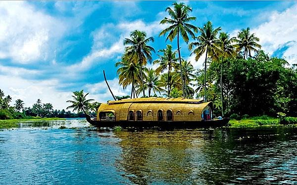

7-Day Classic Kerala Tour
Experience the essence of Kerala in one week - from Kochi's heritage to Munnar's tea gardens and Alleppey's backwaters.
View Itinerary →Discover God's Own Country - Perfect Itineraries for Your Kerala Trip
Experience the essence of Kerala in one week - from Kochi's heritage to Munnar's tea gardens and Alleppey's backwaters.
View Itinerary →10 Days | 9 Nights
Covers Kochi, Munnar, Thekkady, Alleppey, Kovalam, and more with cultural shows and spice plantation visits.
5 Days | 4 Nights
Houseboat cruise through Alleppey and Kumarakom with village walks and canoe rides.
14 Days | 13 Nights
Premium stays, private tours, ayurvedic spa treatments, and exclusive experiences across Kerala.